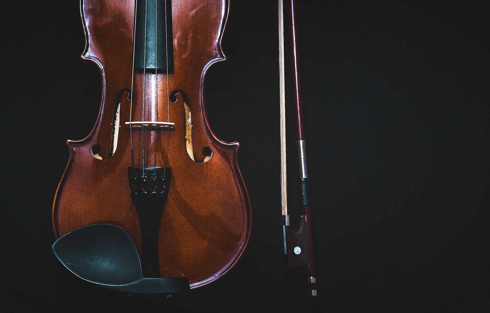
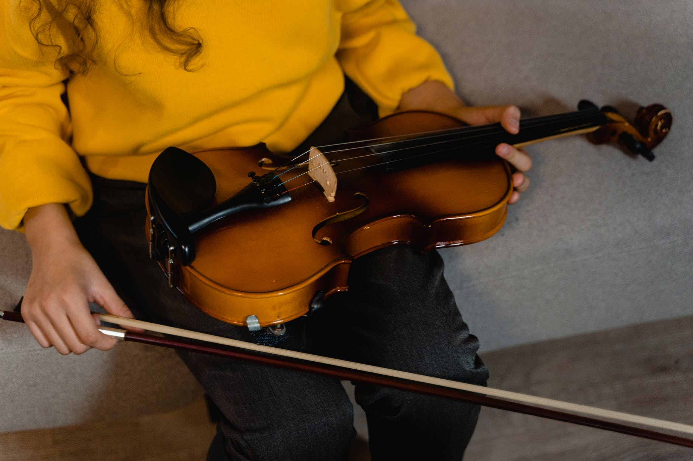
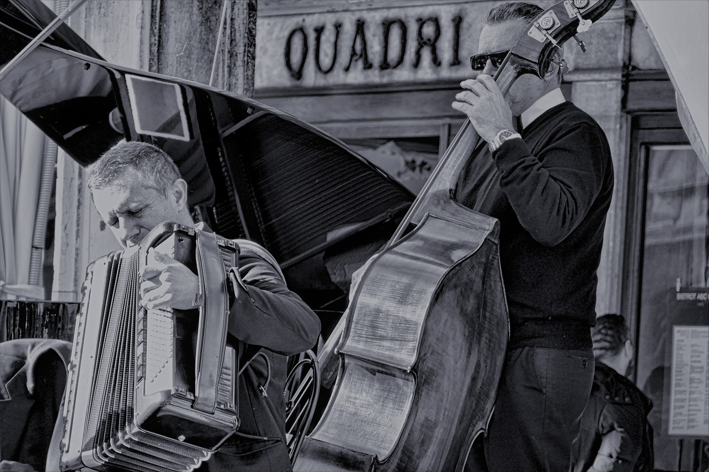

Your Basic Overview of Classical String Instruments
A Brief History of String Instruments
Stringed instruments have always been essential to the classical orchestra. Even from the beginning: from Bach to Vivaldi to Tchaikovsky, every orchestral composer has integrated strings into their music somehow. The Baroque period was the start of the dominance of strings. With the poor quality of brass and detailed wind instruments, and with the lack of modern keyboard instruments, composers relied on the wide range of strings to meet their musical needs.
Types of Classical String Instruments





- Strings are essential to the melody of an orchestral piece.
- Violins are the most popular of classical strings. They play on the highest register and typically play in two sections.
- Violas are simply violins played on a lower register. They are often used to play harmonies.
- Cellos in solo pieces only came about a few decades ago. Before then, cellists almost always played in orchestras.
- Double basses are the lowest of all strings. They are sometimes plucked rather than bowed, and are also seen in jazz/pop music.